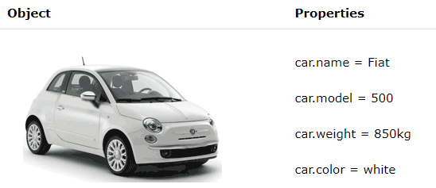

JS Fundamentals
9 July 2022JavaScript and its relationship to HTML and CSS
In my last blog, I shared that there are three cornerstones technologies of the World Wide Web: HTML, CSS, and JavaScript. If a web page is like a Hallmark greeting card, then HTML is the text that says "Happy Birthday!", the CSS defines the style, font, and color, and lastly JavaScript is the ability to open the card and hear the music inside. Remember one of those musical cards? Gawd, I feel old.
JavaScript is a dominant force in the programming world. Created just over 26 years ago, one estimate suggests that it's used as a client-side programming language by around 98% of all websites in the world. "Client-side programming" is just a fancy way of saying that it is intended for you to see as the viewers of the web, runs on the client machine or browser, and deals with the user interface.
In another analogy, you can think of it as a 'muscle' that moves your skeleton, and bones, and activates your vocal chord so you can express movement and share your thoughts or 'content with the world. In these muscles, you can also store some behavioral memories or logic, such as "when you touch the stove and it's hot, let go and pull your hand immediately"
Control Flow and Loops
In programming, there is the term "control flow". It means the sequence or order in which coded instructions are being executed. Imagine if you are trying to follow your grandma's family pasta recipe and she told you to follow the recipe diligently from step 1 to step 10 without taking shortcuts. You wouldn't want to upset her by taking shortcuts, would you? Grandma already specified her "control flow" for you to follow and every single time you attempt the family recipe, you better execute as instructed.
Control flows are an integral part of most programming languages as they allow your code to take actions based on various situations or conditions. The JavaScript programming language relies heavily on the control flow structures as well.
There are simpler control flows such as "read the file and execute from top to bottom", but there are others that allow you to accomplish different objectives, such as loops. A loop is a set of instructions that are repeated until a defined condition is met.
Let's go back to our grandma's recipe example.
- Step 5 requires you to add salt one teaspoon at a time up to 5 teaspoons
- Step 6 requires you to taste the pasta sauce, and only if the sauce is not salty enough, add another 1 teaspoon of salt. Repeat this until you find the saltiness satisfactory.
Both of these steps are different types of repetitions (or loops). You will "execute" step 5 first without tasting or regardless of its saltiness. Then, and only then, you move on to step 6. And you stop when you are satisfied with the saltiness level (i.e. the condition is met).
In Java Script, these are the five different types of loops:
- for - loops through a block of code a number of times
- for/in - loops through the properties of an object
- for/of - loops through the values of an iterable object
- while - loops through a block of code while a specified condition is true
- do/while - also loops through a block of code while a specified condition is true
Let's look at some examples for loops
c
for (statement 1; statement 2; statement 3) {
// code block to be executed
}
Example in practice:
<script>
let text = "";
for (let i = 0; i < 5; i++) {
text += "The number is " + i + "
";
}
document.getElementById("demo").innerHTML = text;
</script>
From the example above, you can read: Statement 1 sets a variable before the loop starts (let i = 0).Statement 2 defines the condition for the loop to run (i must be less than 5). Statement 3 increases a value (i++) each time the code block in the loop has been executed.The output is as follows:
The number is 0
The number is 1
The number is 2
The number is 3
The number is 4
You can learn more about the different types of loops on W3Schools.com
DOM and an example of how you might interact with it
Let's move on to the next concept DOM, not Dominic or DOM from Fast and Furious, but Document Object Model (DOM). It took me a while to get it because my head cannot escape referring to Vin Diesel when the term DOM was triggered. But I think I have figured it out.
Let's go back to Grandma. Imagine Grandma belongs to a community of 100 passionate pasta makers fully adamant about gifting the world the next life-changing pasta. However, they are open-minded about the process and are willing to exchange notes about how to fine-tune their pasta sauce recipe.
Since there are so many of them, each coming to the gathering with their own unique and special recipe, the community decided they needed some ground rules. They decided that going onward every single recipe must be written with specified categories that are in order:
[1] The Setup
.. Shopping List
.. Equipment List
[2] The Cooking
.. Preparing
.. Cooking
.. Stove
.. Tasting
.. Presenting
[3] The Clean Up
This method allows changing and finetuning each pasta maker's recipe, even sharing with others without confusing the whole knowledge body of life-changing pasta. And thus, programmers and the people at World Wide Web Consortium decided to learn from these grandmas in the 90s and issued the DOM.
In web development, the DOM or Document Object Model is a cross-platform application programming interface (API) that treats an HTML or XML document as a tree structure wherein each node is an object representing a part of the document. The DOM represents a document with a logical tree.
This way, the "objects" within these documents can be "targeted" by instructions (internal or external) so they can be modified or can respond in certain ways.DOM: Document Object Model

The HTML DOM Tree of Objects

With the object model, JavaScript gets all the power it needs to create dynamic HTML:
- change all the HTML elements in the page
- change all the HTML attributes in the page
- change all the CSS styles in the page
- remove existing HTML elements and attributes
- add new HTML elements and attributes
- react to all existing HTML events in the page
- create new HTML events in the page
The following example changes the content (the innerHTML) of the p element with id="demo":
<html>
<body>
<p id="demo"> </p>
<script >
document.getElementById("demo").innerHTML = "Hello World!";
</script >
</body >
</html >
The difference between accessing data from arrays and objects
Both arrays and objects are special data storage types in JavaScript. They are both mutable (changeable) and can consist of multiple data points (collection of data or a list of values instead of a single value).
If the data you are working on are entities with multiple characteristics or properties, you want an object. If the data are entities where characteristics are the same or similar, or if you need them in a distinct order, you are likely to need an array instead.
Objects
Objects are used to represent a “thing” in your code. That could be a person, a car, a building, a book, a character in a game — basically anything that is made up or can be defined by a set of characteristics.
Example of an Object
You can create the above object this way:
let car = {name:"Fiat", model:"500", weight:"850kg", color:"white"};
// Example 'person' object
var person = {
name: 'Cody',
age: 88,
likesCoding: true
};
var person2 = {
name: 'James',
age: 21,
likesCoding: true
};
You can access object properties in two ways:
objectName.propertyName
or
objectName["propertyName"]
Arrays
We use arrays whenever we want to create and store a list of multiple items in a single variable. Arrays are especially useful when creating ordered collections where items in the collection can be accessed by their numerical position in the list.
Using an array literal is the easiest way to create a JavaScript Array.Syntax:
const array_name = [item1, item2, ...];
var vacationSpots = ['Tokyo', 'Bali', 'Mexico City', 'Vancouver'];
const colors = ['red', 'green', 'blue'];
Another example of array being used in combination with loops and DOM
<script>
var arr1 = [50,60,65,90];
var arr2 = [25,35,50,90];
for (i = 0; i < arr1.length; i++) {
for (z = 0; z < arr1.length; z++)
{if (arr1[i] === arr2[z]) {
document.write("<br>Matched element: "+arr2[z]);}}}
</script>
You access an array element by referring to the index number.Note: Array indexes start with 0. [0] is the first element. [1] is the second element.
var vacationSpots = ['Tokyo', 'Bali', 'Mexico City', 'Vancouver'];
const colors = ['red', 'green', 'blue'];
“Maybe a good analogy here is bar codes and serial numbers. Take an iPod in a store. On the packaging will be a bar code. This tells the store what the product is, so when it is scanned, the system knows exactly what the product is and what it costs. It might even be able to know what color it is or where it was kept in the store. All iPod of this same type have the exact same barcode on them. The iPod will also have a serial number on it which is absolutely unique to any other iPod (or any other device) in the world. The serial number doesn’t know the price. It could, but for the store this wouldn’t be a very efficient way to store and use that data. Much easier to use the barcode, so that for example, if the price changed, you could just change the price for that bar code and not every individual serial number in your system. This is much like ID’s and Classes. Information that is reusable should be kept in a class and information that is totally unique should be kept in an ID.”
- Coyier
IDs are unique and Classes are not unique to an element

IDs are unique and each element can have only one ID. Each page can have only one element with that ID. Yes, in the entire page. But you can use classes over and over.
<div id="list">
<h1> Rugby Awards </h1>
<p class="award"> Winner one </p>
<p class="winner"> Ben </p>
<p class="award"> Winner two </p>
<p class="winner"> Josh </p>
</div >
Setting Classes and IDs
This is an over simplification, but generally specifying css styling values for classes and IDs on the CSS file or styling blocks can be done this way:
.bigfont {
font-size: 4em;
}
a dot (.) is used to set a class
#bigfont {
font-size: 4em;
}
and # is used to set an ID
Now that we have covered basic overview of classes and IDs, let's discuss some best practices.
#1. Plan ahead so you don't over use classes and IDs
Classes and IDs are important and we rely on them to do page styling and manipulation, but making a class or ID for every small thing or segment will clutter your CSS and make yourself or others reading your code confused.
Planning is key so that you don't find yourselves with specificity conflicts between your classes, IDs, and other more general selectors.
Lastly, you don't want to over-identify something that is already clear from the anchor element itself. For instance (see below), here it is already clear that the >a> anchor element is a link. There is no need to be redundant in classing it as such.
<a href="https://bensonkawengian.com"
class="link">Bensonkawengian.com </a>
#2. Semantics or Words are important
Think about the objective, function and purpose for the classes and IDs so you can name them appropriately and succinctly. My research online suggests that many experts agree that shorter and more generic words are better. Use words that describe the context of the element. For example instead of naming them "right-col", you can consider "sidebar"
Keep track of your classes and IDs. I personally found it's useful to clearly identify and comment over them on my CSS sheet.
#3. IDs have a special browser functionality
While classes do not have this ability, the # hex value identifier that we use to set IDs can be used by the browser to locate that element. For example, If you have a URL like http://yourdomain.com#comments, the browser will attempt to locate the element with an ID of “comments” and will automatically scroll the page to show that element.
IDs are commonly used in that programming language. The function getElementById allows you to select an element on a web page. It relies on the fact that only one element can share the same ID.
#4. You can use both ID and CSS Class Selectors on a single element
Suppose you have a generic style assigned to a class "background-blue" but wants to a special modification or customisation to a particular div tag. However, when you do this, you need to remember that the ID must be unique for the element or on that page. You could do so using this code:
<div class="background-blue" id="custom-edit"></div>
Sources
- The Difference Between ID and Class
- Reasons not to use IDs in CSS
- CSS From Wikipedia, the free encyclopedia
- Best Practices for ID and Class Names
- CSS Tutorial on W3 Schools ID and Class
- ID vs Class CSS: Understanding the Differences